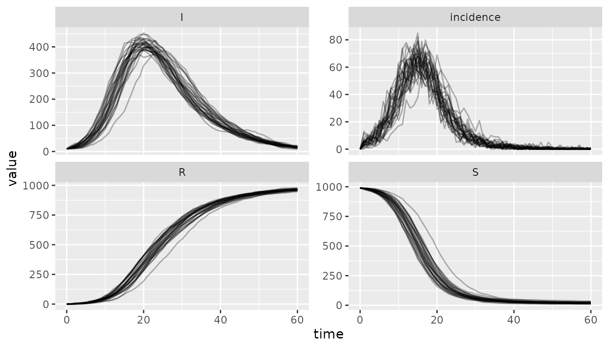
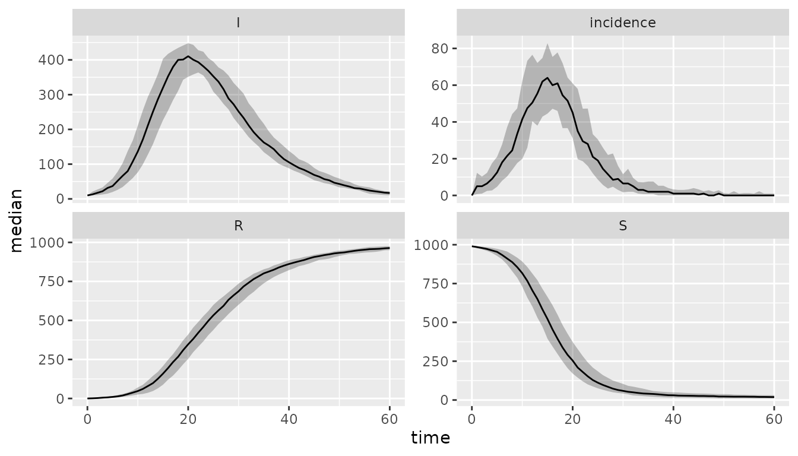
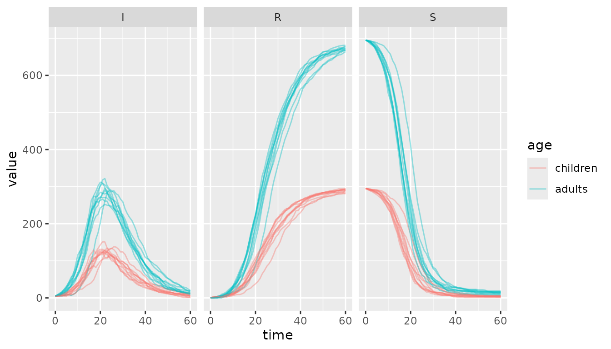
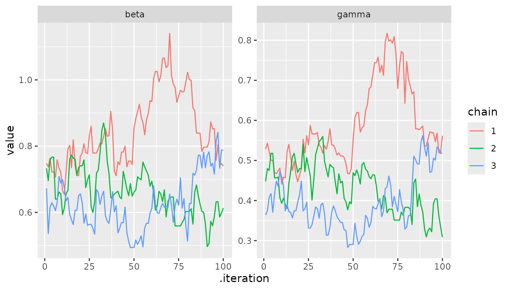
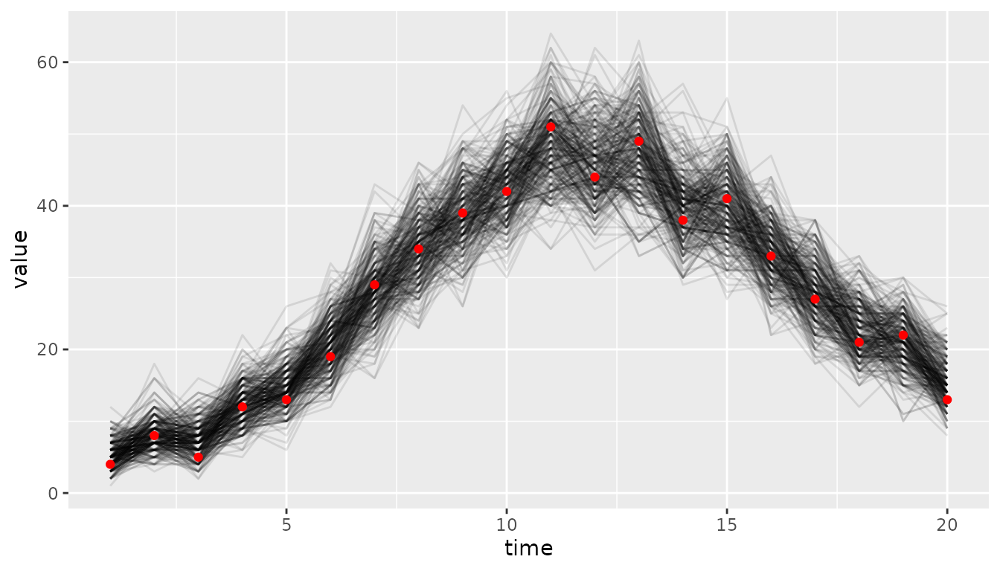
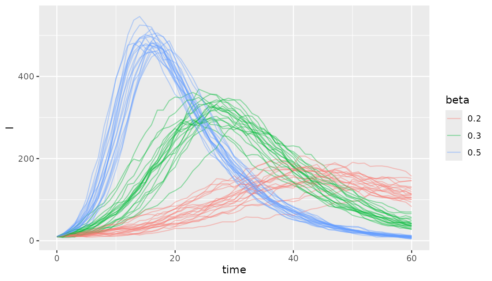
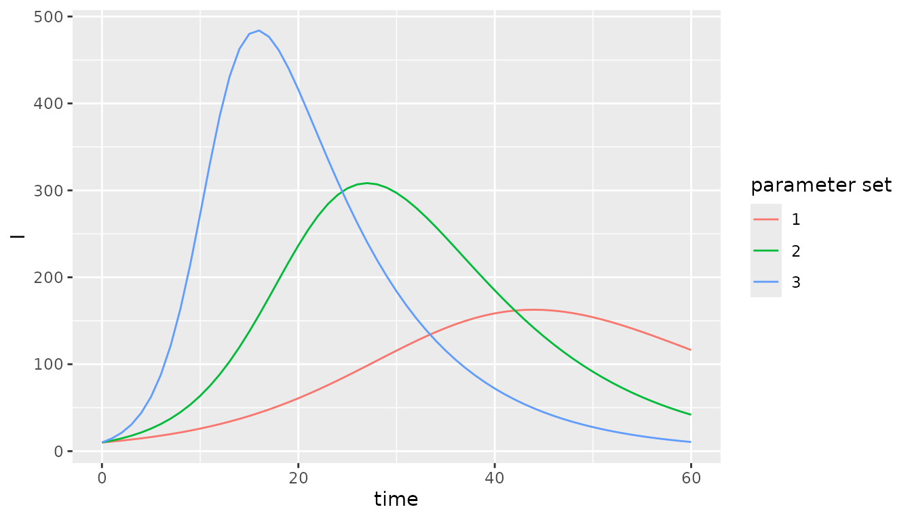
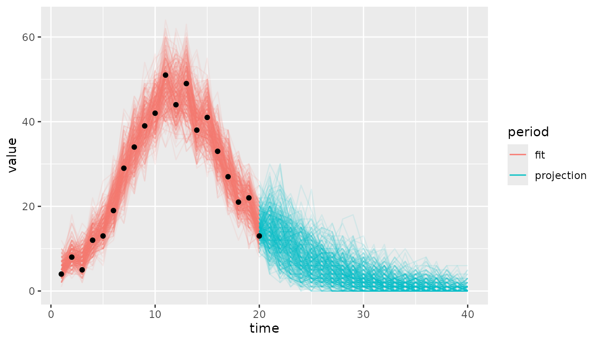
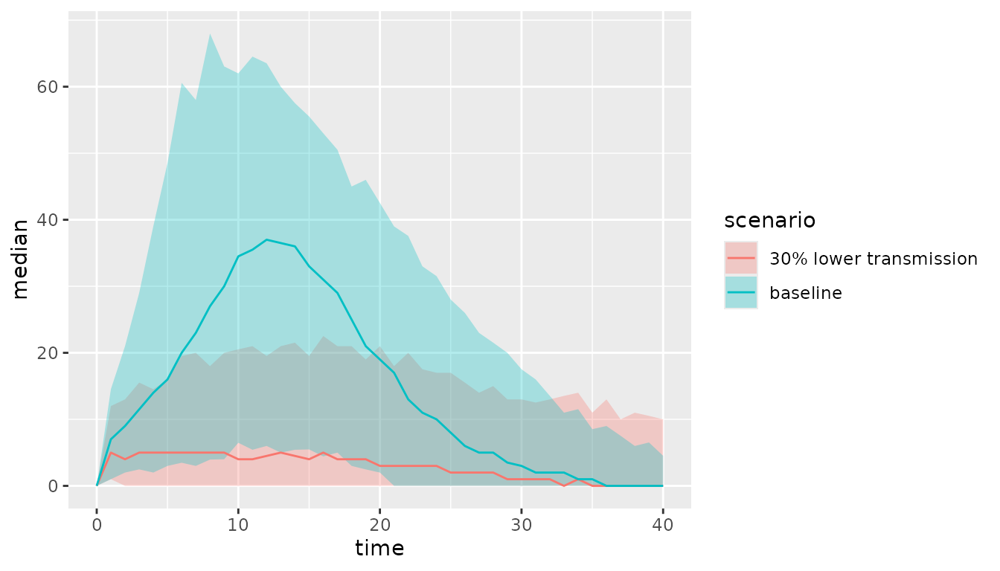

dust2 returns model output as arrays, with state on the
first dimension and time on the last, and monty stores
samples and trajectories the same way. This package turns those arrays
into long-format tibbles, with one row per value, that can go straight
into ggplot2.
A simulation
A stochastic SIR model that also tracks daily incidence, and can be compared to case data:
sir <- odin({
update(S) <- S - n_SI
update(I) <- I + n_SI - n_IR
update(R) <- R + n_IR
update(incidence) <- incidence + n_SI
p_SI <- 1 - exp(-beta * I / N * dt)
p_IR <- 1 - exp(-gamma * dt)
n_SI <- Binomial(S, p_SI)
n_IR <- Binomial(I, p_IR)
initial(S) <- N - I0
initial(I) <- I0
initial(R) <- 0
initial(incidence, zero_every = 1) <- 0
N <- parameter(1000)
I0 <- parameter(10)
beta <- parameter(0.4)
gamma <- parameter(0.1)
cases <- data()
cases ~ Poisson(incidence)
}, quiet = TRUE)Run 30 particles and tidy the result. tidy_simulation()
needs the system and the times as well as the output, because the array
does not record either:
sys <- dust_system_create(sir, list(), n_particles = 30, dt = 0.25)
dust_system_set_state_initial(sys)
t <- 0:60
y <- dust_system_simulate(sys, t)
dim(y)
#> [1] 4 30 61
sim <- tidy_simulation(y, sys, t)
sim
#> # A tibble: 7,320 × 4
#> particle time variable value
#> <int> <int> <chr> <dbl>
#> 1 1 0 S 990
#> 2 1 0 I 10
#> 3 1 0 R 0
#> 4 1 0 incidence 0
#> 5 2 0 S 990
#> 6 2 0 I 10
#> 7 2 0 R 0
#> 8 2 0 incidence 0
#> 9 3 0 S 990
#> 10 3 0 I 10
#> # ℹ 7,310 more rows
ggplot(sim, aes(time, value, group = particle)) +
geom_line(alpha = 0.3) +
facet_wrap(~variable, scales = "free_y")
summarise_trajectories() collapses over particles (and
draws and chains, where present) for a ribbon plot:
ggplot(summarise_trajectories(sim), aes(time)) +
geom_ribbon(aes(ymin = lower, ymax = upper), alpha = 0.3) +
geom_line(aes(y = median)) +
facet_wrap(~variable, scales = "free_y")
Array variables
Variables with dimensions get one index column per dimension.
dims names those columns and labels turns an
index into a labelled factor:
sir_age <- odin({
update(S[]) <- S[i] - n_SI[i]
update(I[]) <- I[i] + n_SI[i] - n_IR[i]
update(R[]) <- R[i] + n_IR[i]
p_SI <- 1 - exp(-beta * sum(I) / sum(N) * dt)
p_IR <- 1 - exp(-gamma * dt)
n_SI[] <- Binomial(S[i], p_SI)
n_IR[] <- Binomial(I[i], p_IR)
initial(S[]) <- N[i] - 5
initial(I[]) <- 5
initial(R[]) <- 0
N <- parameter()
beta <- parameter(0.4)
gamma <- parameter(0.1)
n_age <- parameter(2)
dim(S, I, R, n_SI, n_IR, N) <- n_age
}, quiet = TRUE)
sys <- dust_system_create(sir_age, list(N = c(300, 700)), n_particles = 10)
dust_system_set_state_initial(sys)
y <- dust_system_simulate(sys, t)
sim_age <- tidy_simulation(y, sys, t, dims = "age",
labels = list(age = c("children", "adults")))
sim_age
#> # A tibble: 3,660 × 5
#> particle time variable age value
#> <int> <int> <chr> <fct> <dbl>
#> 1 1 0 S children 295
#> 2 1 0 S adults 695
#> 3 1 0 I children 5
#> 4 1 0 I adults 5
#> 5 1 0 R children 0
#> 6 1 0 R adults 0
#> 7 2 0 S children 295
#> 8 2 0 S adults 695
#> 9 2 0 I children 5
#> 10 2 0 I adults 5
#> # ℹ 3,650 more rows
ggplot(sim_age, aes(time, value, colour = age,
group = interaction(age, particle))) +
geom_line(alpha = 0.4) +
facet_wrap(~variable)
A fit
Fit the SIR model to some case data with a particle filter, saving the trajectories and the final state of each sample:
data <- data.frame(
time = 1:20,
cases = c(4, 8, 5, 12, 13, 19, 29, 34, 39, 42, 51, 44, 49, 38, 41, 33, 27,
21, 22, 13))
filter <- dust_filter_create(sir, time_start = 0, data = data,
n_particles = 100, dt = 0.25)
packer <- monty_packer(c("beta", "gamma"), fixed = list(N = 1000, I0 = 10))
likelihood <- dust_likelihood_monty(filter, packer, save_trajectories = TRUE,
save_state = TRUE)
prior <- monty_dsl({
beta ~ Exponential(mean = 0.5)
gamma ~ Exponential(mean = 0.2)
})
sampler <- monty_sampler_random_walk(diag(c(0.002, 0.001)))
samples <- monty_sample(likelihood + prior, sampler, 600,
initial = c(0.4, 0.1), n_chains = 3)
#> ⡀⠀ Sampling [▁▁▁] ■ | 0% ETA: 14s
#> ⠄⠀ Sampling [█▃▁] ■■■■■■■■■■■■■■■ | 46% ETA: 2s
#> ✔ Sampled 1800 steps across 3 chains in 2.8s
#>
samples <- monty_samples_thin(samples, burnin = 300, thinning_factor = 3)Parameters, with chain and iteration recorded for trace plots:
pars <- tidy_pars(samples)
pars
#> # A tibble: 600 × 5
#> .chain .iteration .draw parameter value
#> <int> <int> <int> <chr> <dbl>
#> 1 1 1 1 beta 0.748
#> 2 1 1 1 gamma 0.529
#> 3 1 2 2 beta 0.737
#> 4 1 2 2 gamma 0.543
#> 5 1 3 3 beta 0.764
#> 6 1 3 3 gamma 0.522
#> 7 1 4 4 beta 0.722
#> 8 1 4 4 gamma 0.500
#> 9 1 5 5 beta 0.722
#> 10 1 5 5 gamma 0.500
#> # ℹ 590 more rows
ggplot(pars, aes(.iteration, value, colour = factor(.chain))) +
geom_line() +
facet_wrap(~parameter, scales = "free_y") +
labs(colour = "chain")
The fitted trajectories need the filter too, as the samples do not record the names of the state variables or the times:
fit <- tidy_trajectories(samples, filter, vars = "incidence")
fit
#> # A tibble: 6,000 × 6
#> .chain .iteration .draw time variable value
#> <int> <int> <int> <int> <chr> <dbl>
#> 1 1 1 1 1 incidence 6
#> 2 1 1 1 2 incidence 12
#> 3 1 1 1 3 incidence 8
#> 4 1 1 1 4 incidence 22
#> 5 1 1 1 5 incidence 14
#> 6 1 1 1 6 incidence 16
#> 7 1 1 1 7 incidence 29
#> 8 1 1 1 8 incidence 30
#> 9 1 1 1 9 incidence 40
#> 10 1 1 1 10 incidence 40
#> # ℹ 5,990 more rows
ggplot(fit, aes(time, value)) +
geom_line(aes(group = .draw), alpha = 0.1) +
geom_point(aes(y = cases), data = data, colour = "red")
Running the model over many parameter sets
run_parameter_sets() runs the model from its initial
conditions, once per parameter set, and returns an object with the same
structure as samples. The parameter sets can be a data
frame with one row per set. Parameters that should stay the same in
every set go in fixed:
grid <- data.frame(beta = c(0.2, 0.3, 0.5))
sweep <- run_parameter_sets(sir, grid, times = 0:60,
fixed = list(gamma = 0.1, N = 1000),
n_particles = 20, dt = 0.25)
sweep
#>
#> ── <monty_samples: 1 parameter x 3 samples x 1 chain> ──────────────────────────
#> ℹ Parameters: 'beta'
#> ℹ Conversion to other types is possible:
#> → ! posterior::as_draws_array() [package installed, but not loaded]
#> → ! posterior::as_draws_df() [package installed, but not loaded]
#> → ✖ coda::as.mcmc.list() [package missing]
#> ℹ These samples have associated observations
#> ℹ See `?monty_sample()` and `vignette("samples")` for more informationBecause the structure matches a fit, the same functions tidy it. Each
parameter set is a draw, so parameters join to trajectories by
.draw:
sweep_tidy <- dplyr::left_join(
tidy_trajectories(sweep, vars = "I"),
dplyr::select(tidy_pars(sweep), .draw, beta = value),
by = ".draw")
ggplot(sweep_tidy, aes(time, value, group = interaction(.draw, particle),
colour = factor(beta))) +
geom_line(alpha = 0.4) +
labs(colour = "beta", y = "I")
n_particles sets the number of stochastic realisations
per parameter set. With deterministic = TRUE a stochastic
model is instead run once per set using expectations in place of random
draws:
sweep_det <- run_parameter_sets(sir, grid, times = 0:60,
fixed = list(gamma = 0.1, N = 1000),
deterministic = TRUE, dt = 0.25)
ggplot(tidy_trajectories(sweep_det, vars = "I"),
aes(time, value, colour = factor(.draw))) +
geom_line() +
labs(colour = "parameter set", y = "I")
Continuing from a fit
continue_parameter_sets() carries on from the final
state and time of a set of samples, with each sample continuing from its
own state using its own parameters. For a fit this needs the filter and
the packer, and the likelihood must have been created with
save_state = TRUE. Here each posterior draw is projected
forward 20 days:
projection <- continue_parameter_sets(samples, times = 20:40, obj = filter,
packer = packer)
both <- dplyr::bind_rows(
fit = fit,
projection = tidy_trajectories(projection, vars = "incidence"),
.id = "period")
ggplot(both, aes(time, value)) +
geom_line(aes(group = interaction(.draw, period), colour = period),
alpha = 0.1) +
geom_point(aes(y = cases), data = data) +
guides(colour = guide_legend(override.aes = list(alpha = 1)))
The result of either function can itself be continued, and
n_particles runs several realisations forward from each
draw’s state.
Counterfactuals
Posterior samples can also be passed to
run_parameter_sets() to rerun the model from the start.
modify changes each parameter set before it is run. Running
the baseline the same way gives a like-for-like comparison, since both
are then unfiltered simulations:
baseline <- run_parameter_sets(sir, samples, times = 0:40, packer = packer,
dt = 0.25)
reduced <- run_parameter_sets(sir, samples, times = 0:40, packer = packer,
modify = function(p) {
p$beta <- p$beta * 0.7
p
}, dt = 0.25)
scenarios <- dplyr::bind_rows(
baseline = tidy_trajectories(baseline, vars = "incidence"),
"30% lower transmission" = tidy_trajectories(reduced, vars = "incidence"),
.id = "scenario")
ggplot(summarise_trajectories(scenarios), aes(time, fill = scenario)) +
geom_ribbon(aes(ymin = lower, ymax = upper), alpha = 0.3) +
geom_line(aes(y = median, colour = scenario))